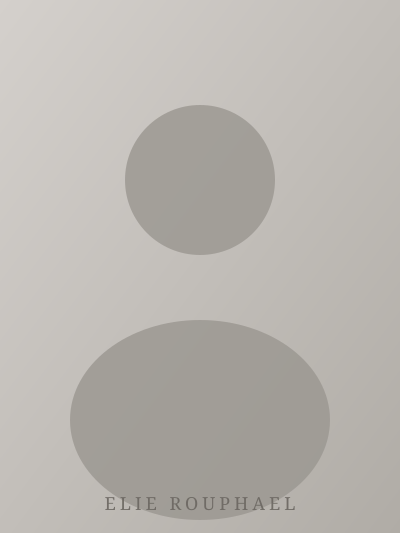

Elie
Rouphael
Senior Lecturer · University of Lille
I am a Senior Lecturer (Maître de Conférences) in the Department of Computer Science and Automation at the University of Lille, France. My work sits at the intersection of control theory, embedded systems, and autonomous robotics.
My research focuses on the design and analysis of control systems for autonomous platforms, with particular emphasis on real-time C programming, sequential logic design, and the formal verification of safety-critical systems.
I hold a PhD in Automatic Control and Robotics from the University of Lille, where I also completed my Master's degree in Embedded Systems Engineering. Prior to joining the faculty, I was a postdoctoral researcher at the CRISTAL laboratory.
My teaching philosophy centers on bridging the gap between theoretical foundations and real-world engineering practice. I supervise student projects in autonomous systems, and regularly collaborate with industry partners on applied research.
Outside the lecture hall, I am an enthusiastic chess player and an avid photographer — two disciplines that, in their own way, demand patience, precision, and a keen eye for structure.